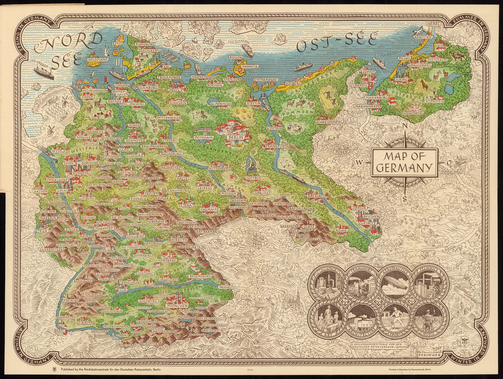
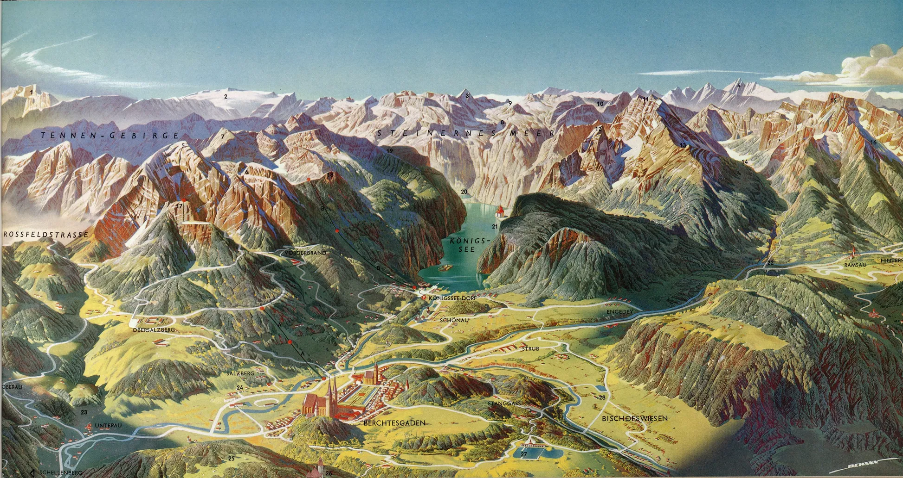
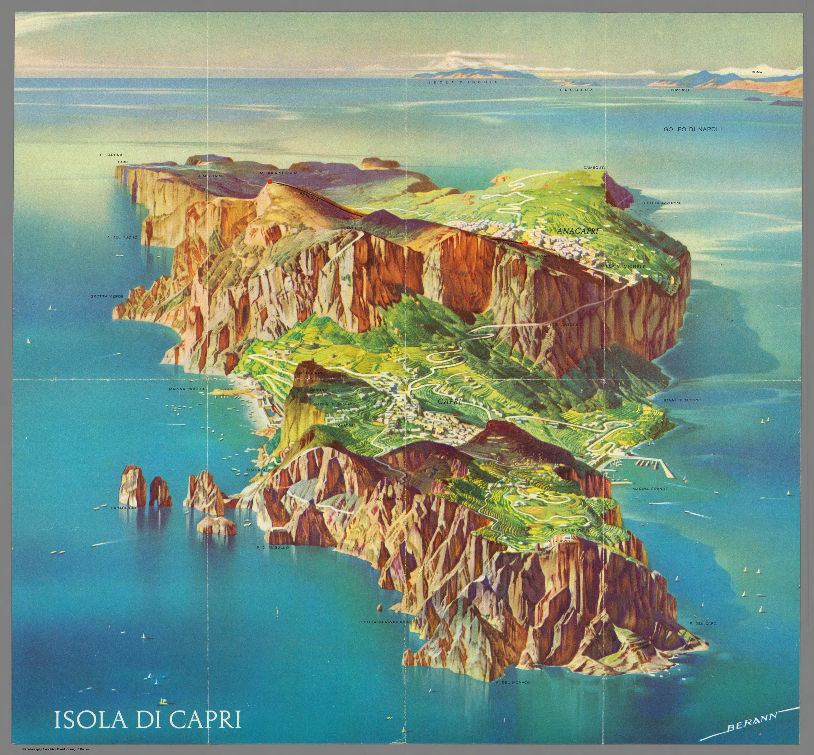

Voyages
"Air France, Le Plus Grand Reseau du Monde" de Lucien Boucher (1964)
David Rumsey Map Center Stanford University Libraries

"Carte de l'Allemagne" de Max Beringer (1935) pour la Direction générale des chemins de fer pour le trafic touristique allemand
David Rumsey Map Center Stanford University Libraries

"Territoire de Berchtesgaden" de Heinrich Caesar Berann (1966)
David Rumsey Map Center Stanford University Libraries

"Île de Capri" de Heinrich Caesar Berann (1965)
David Rumsey Map Center Stanford University Libraries